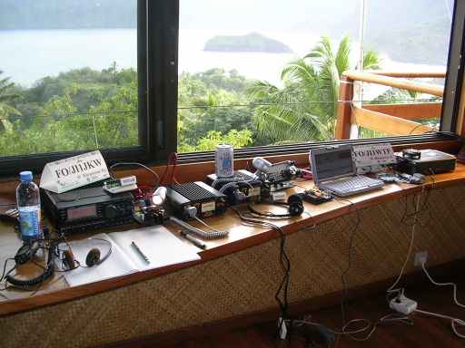
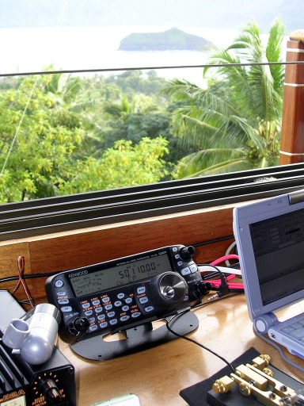

成田に向け出発するJI1JKW、JI1WTF(左)の両局
横浜駅で(写真提供・JJ1CKD)
| 6m Today ! |
[Back Issues May.2004]
TIME:UTC(JST-09:00)
Report from JA1RJU & 8J1ITU (QM06cb)
31.May.2004(15:00c)
*BY-TV 00:00- 49.750 --
KH0/JA3EGE 08:05 50.110 CW
Report from JA1RJU & 8J1ITU (QM06cb)
30.May.2004(17:00d)
*BY-TV 00:00- 49.750 --
BV3FQ 03:00 50.120 SSB
KL7HBK 06:52 50.110 SSB
(K6FV/B 07:08- 50.069 CW Beacon into JA7)
IW5DHN 16:50 50.196/035 JT65A EME 8J1ITU=QM06cb-
Report from JA1RJU & 8J1ITU (QM06cb)
29.May.2004(15:00b)
*BY-TV 08:00- 49.750 --
Report from JA1RJU & 8J1ITU (QM06cb)
28.May.2004(15:00c)
*BY-TV 00:00- 49.750 --
BN0F 01:50 50.110 CW
W7GJ 04:00 50.145/044 JT65A EME=PM85
27.May.2004(15:00d)
*BY-TV 00:00- 49.750 --
BN0F 02:00 50.115 CW
BN0F 02:19 50.115 SSB
BG9BA 07:02 50.110 SSB
HL1LTC 07:10 50.110 CW
BN0F 08:32 50.110 SSB
26.May.2004(15:00d)
*BY-TV 00:00- 49.750 --
HL1LTC 03:39 50.110 CW
BD4SDB 05:30 50.110 SSB CQ
HL2NF 06:24 50.110/120 SSB
HL2FDW 06:50 50.110 CW
25.May.2004(15:00c)
*BY-TV 00:00- 49.750 --
BG9BA 02:55 50.110 CW CQ
HL1LTC 03:23 50.110 CW
BG9BA 03:25 50.110 SSB
24.May.2004(15:00d)
*BY-TV 00:00- 49.750 --
(UA0CQ 09:03 50.110 CW JA7)
VR2XMT 14:22 50.110/115 SSB CQ
BD4SDB 14:57 50.110 SSB CQ
Report from JA1RJU & 8J1ITU (QM06cb)
23.May.2004(15:00c)
*BY-TV 00:00- 49.750 --
HL2FDW 02:01 50.110 CW
HL4CEL 02:10 50.110 CW
C21SIX 09:40- 50.038 CW Beacon
VK4RTL 09:40- 50.087 CW Beacon
Report from JA1RJU & 8J1ITU (QM06cb)
22.May.2004(15:00b)
*BY-TV 01:00- 49.750 -- Es JA8
21.May.2004(15:00b)
*BY-TV 00:00- 49.750 -- Es JA6/JR6
(JR6YBR 02:00- 50.0178 CW Beacon) strong!
20.May.2004(15:00c)
*BY-TV 00:00- 49.750 -- Es JR6
VK6RSX 09:27- 50.304 CW Beacon
VK6JQ 09:37 50.110/112 CW strong!
19.May.2004(15:00d)
*BY-TV 01:00- 49.750 --
VK6RSX 10:00- 50.304 CW Beacon
VK4CXQ 10:18 50.110 CW
18.May.2004(15:00d)
*BY-TV 01:00- 49.750 -- Es JA6/JR6
VK6RSX 08:00- 50.304 CW Beacon strong!
VK6JQ 08:11 50.110 CW
VK4RTL 08:15- 50.087 CW Beacon
(A45XR 11:51 50.110 CW JA7)
|
◎ この時期としては珍しくA45XR(Oman)が11:51z頃からCWで入感、QSO(JA7WSZ)している。 3/4月に3B9C(Rodoriges)で聞いていた感じでは、中近東から比較的アクティブにQRVしているのはこのA45XRと、 A61AH(UAE)だったが、A61AHはSSBだけなので"よほどの"事がない限りQSOは難しいかも？。 地中海沿岸のJY4NE(Jordan)や4X/4Z(Israel)、5B4(Cyprus)などもアクティブにQRVしているが、 方向は同じでも距離的にかなり違うので更にパスは難しい。 ここのところサンスポットも一時的に上昇しているので"F2 & Es"の伝搬に要注意！。 |
17.May.2004(15:00c)
*BY-TV 01:00- 49.750 --
KH0/JJ1QKM 08:40 50.130 SSB
16.May.2004(15:00c)
KH0/JJ1QKM 08:25 50.160 SSB
LY2BAW 08:12 50.*** JT65A EME(KO25-QM06=one way)
15.May.2004(10:00b)
*BY-TV 03:00- 49.750 --
LY2BAW 07:29 50.*** JT65A EME(KO25-QM06=one way)
| ◎ 株式会社バーテック・スタンダード(旧八重洲無線)の"50MHz機"として発売されてきた"YAESU FT-920"が製造を終了して、 後継機の発表が待たれていたが、 ここのところ雑誌の広告等で最高級通信機として発表されている新製品のFT DX-9000が50MHzバンドが搭載されていることから、 50MHzバンドでもこれがベースステーションとしての"後継機"となりそう。 その内容や50MHzでの実力など詳細は今のところまだ不明だが、現存機の"HF機に外付けのコンバーター方式"に比べ、 "トータルバランス"の優れたものになるのは当然なので期待が持たれる。 50MHzに関する問題としては"価格"と共にサンスポット下降期での需要がどの程度延びるか？...だろう。 |
14.May.2004(15:00c)
*BY-TV 00:00- 49.750 --
13.May.2004(15:00d)
*BY-TV 02:00- 49.750 --
DS4KDB 05:40 50.110 SSB Es JR6
VK4RTL 09:00- 50.087 CW Beacon
VK6RSX 09:00- 50.304 CW Beacon
VK4ZJR 09:11 50.110 SSB
VK6JQ 09:47 50.110 CW
12.May.2004(15:00b)
*BY-TV 05:00- 49.750 --
11.May.2004(10:00b)
*BY-TV 07:00- 49.750 -- JA6 Es
06-10.May.2004(00:00a)
◎「6m Today!」のリポートはお休みします
05.May.2004(15:00c)
*BY-TV 03:30- 49.750 --
BD4SDB 06:37 50.110 SSB
HL1ASH 07:37 50.110 SSB
HL2FDW 07:39 50.114 CW
|
◎ FO/M(Marquesas Is)DX-Pedition、6mはOpenなし 4月28日から5月2日までFO/M(Marquesas Is)から運用したJI1JKW & JI1WTFの両局は、 5月4日無事に帰国。次にJI1WTF・野田さんからの運用リポートを紹介。
＝今回も6mでの運用を重点に置いて頑張ったのですが、残念ながらNO QSOに終わってしまいました。 |


04.May.2004(15:00c)
*VK-TV 03:40- 46.172 --
*9M-TV 07:00- 48.240/260 --
*BY-TV 07:00- 49.750 --
JD1BLK 07:20 50.120 SSB/CW
Report from JA1RJU & 8J1ITU (QM06cb)
03.May.2004(15:00b)
HL1LTC 08:28 50.195 SSB Es
Report from JA1RJU & 8J1ITU (QM06cb)
02.May.2004(15:00b)
Report from JA1RJU & 8J1ITU (QM06cb)
01.May.2004(15:00d)
*VK-TV 05:40- 46.172 --
VK8RAS 06:00- 50.047 CW Beacon
FK8SIX/B 06:00- 50.0798 CW Beacon
VK6JJ 06:35 50.110 CW
FK8CA 06:42 50.110 SSB
VK6JJ 06:52 50.110/160 SSB
VK8GF 07:03 50.120 SSB
VK6ZKO 07:04 50.110 SSB
VK8TM 07:07 50.130 SSB
VK4KK 07:21 50.140 SSB
VK6ZKO 07:21 50.150 SSB
VK4CXQ 07:28 50.105 CW
VK4RTL 07:30- 50.087 CW Beacon
VK4KDD/VK6 08:05 50.110 SSB
VK4CXQ 08:18 50.110 CW
| ◎ 4月28日から5月3日までの予定でFO/M(Marquesas Is)から運用を予定しているJI1JKW & JI1WTFの両局は、 4月24日に成田を出発、日本時間の28日からQRVを始めた。 この時期、6mでのJAとのQSOはかなり難しいと思われるが、 160mなどローバンドの運用も行うので、聞こえていたらCALLして貰いたいとのこと。 |